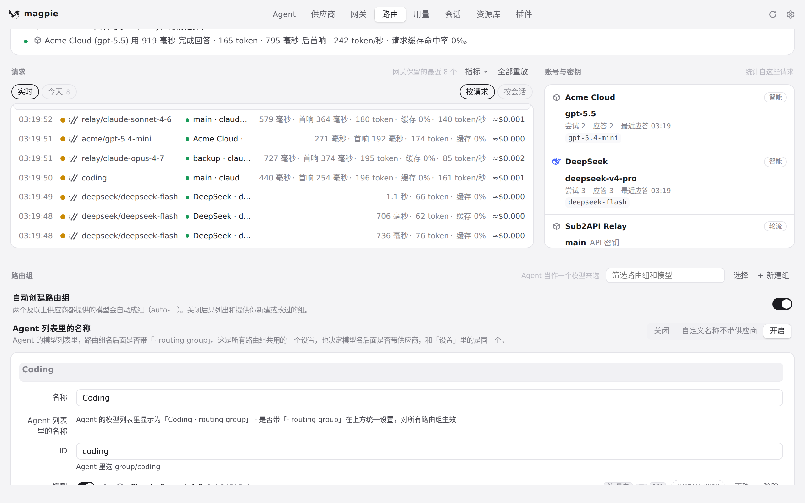
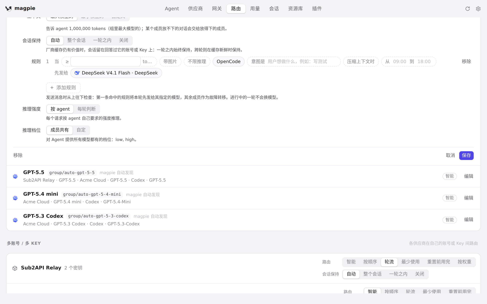
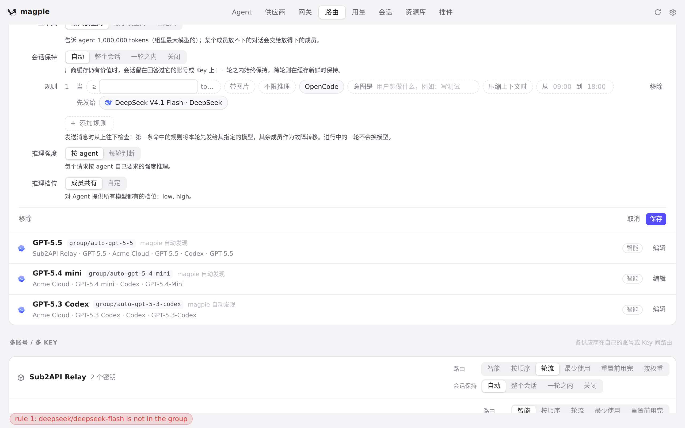

#1093 界面预览
commit 48a6a86 · 回到 PR · 保存路由组时不再同步等待一次供应商额度读取（Codex 的账号状态改为只读已缓存的值），保存变快；保存后编辑器收起时，刚保存的那一行会被滚回视野，而不是留在列表底部。
红线是鼠标走过的轨迹，红色圆环是一次点击；底部文字是这一步在做什么。空格暂停，← → 逐段查看。

保存路由组后那一行回到视野 · Coding 那一行的位置上打开了组编辑器

保存路由组后那一行回到视野 · 保存前：编辑器的高度与「保存」的位置

保存路由组后那一行回到视野 · 保存后，编辑器收起时的列表位置